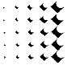
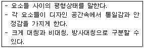
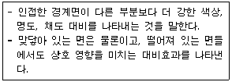
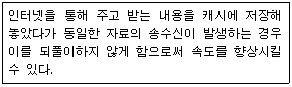
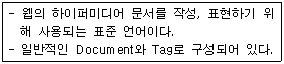
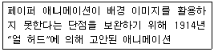
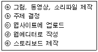
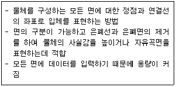
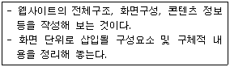
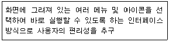

웹디자인기능사 (2012-02-12 기출문제)
1과목: 디자인 일반
1. “Redesign”에 대한 설명으로 옳은 것은?
- 제품의 원상태를 재생하는 작업이다.
- 기존상품의 개선안을 찾아서 새로운 디자인을 개발하는 작업이다.
- 새로운 제품을 위한 신제품을 개발하는 작업이다.
- 실제 제품생산에 들어가기 전에 샘플을 디자인하는 작업이다.
(정답률: 89%)

2. 착시에 대한 설명으로 옳은 것은?
- 눈에 의한 생리적 작용에 따라 형태나 색채 등이 실제와 다르게 지각되는 것을 말한다.
- 각 부분 사이에 강한 힘과 약한 힘이 규칙적으로 연속될 때 생기는 것을 말한다.
- 시각상 힘의 안정을 주면 보는 사람에게 안정감을 주고 명쾌한 감정을 느끼게 하는 것을 말한다.
- 부분과 전체 사이에 디자인 요소들이 잘 어울려서 균형을 유지하는 상태를 느끼게 하는 것을 말한다.
(정답률: 90%)
3. 다음 그림에 대한 설명으로 옳은 것은?

- 반사운용
- 회전 운용
- 팽창이동 패턴
- 조화 패턴
(정답률: 92%)
4. 제과점 홈페이지를 제작할 때 식욕을 돋우는 색채 계획과 가장 거리가 먼 것은?
- 녹색
- 주황
- 노랑
- 빨강
(정답률: 86%)
5. 주전자, 냉장고, 자동차를 디자인하는 디자인 영역은?
- 패션디자인
- 시각디자인
- 환경디자인
- 제품디자인
(정답률: 96%)
6. 레터링(Lettering)에 대한 설명으로 틀린 것은?
- 글자체, 글자 크기, 글자 사이, 여백 등을 조절하여 읽기에 편하도록 구성하는 표현기술이다.
- 넓은 뜻으로 글자 디자인, 글자 표현 등의 글자 자체를 의미한다.
- 어떤 디자인을 위한 특정한 목적을 가지는 글자를 묘사하는 것을 말한다.
- 글자라는 소재를 사용하여 어떤 의도를 표현하고 전달하려는 것이다.
(정답률: 54%)
7. 선(Line)에 대한 설명으로 잘못된 것은?
- 유기적인 선은 정확하고 긴장되며 기계적인 느낌을 준다.
- 수직선은 세로로 된 선으로 숭고한 느낌을 준다.
- 수평선은 가로로 된 선으로 편안한 느낌을 준다.
- 사선은 비스듬한 선으로 동적인 움직임과 불안한 느낌을 준다.
(정답률: 81%)
8. 디자인의 조건 중 합목적성에 해당하는 것은?
- 아름다운 미적인 요소를 추구하는 요소
- 사물이 일정한 목적에 적합한 방식으로 존재하는 성질
- 최소의 경비로 최대의 효과를 얻는 원칙
- 독특한 것을 처음으로 고안해 내려는 성향
(정답률: 86%)
9. 2차원적 프로덕트 디자인에 속하지 않는 것은?
- 텍스타일디자인
- 편집디자인
- 벽지디자인
- 인테리어 직물디자인
(정답률: 52%)
10. 무채색에 대한 설명으로 틀린 것은?
- 밝고 어두운 정도의 차이로 구별된다.
- 색상이 존재하지 않는다.
- 빨강은 무채색이다.
- 채도가 존재하지 않는다.
(정답률: 86%)
11. 다음이 설명하고 있는 디자인 원리는?

- 반복
- 균형
- 조화
- 대비
(정답률: 81%)
12. 입체디자인의 상관 요소에 해당하지 않는 것은?
- 위치(position)
- 형태(shape)
- 방향(direction)
- 공간(space)
(정답률: 37%)
13. 다음이 설명하고 있는 색의 대비로 옳은 것은?

- 채도대비
- 명도대비
- 연변대비
- 반복대비
(정답률: 80%)
14. 색 자각의 3요소로 옳게 구성된 것은?
- 광원, 물체, 시각
- 광원, 색채, 시각
- 광원, 색감, 시각
- 광원, 촉각, 시각
(정답률: 56%)
15. 사인(Sign)이나 심볼 마크(Symbol mark)가 속한 디자인 영역을 인간과 인간 사이를 연결해 주는 하나의 매개체가 되는 디자인 분야는?
- 시각 디자인
- 제품 디자인
- 환경 디자인
- 영상 디자인
(정답률: 84%)
16. 하나의 색상에 각기 다른 여러 명도의 조화를 단계적으로 동시에 배색하여 얻어지는 조화는?
- 색상 대비에 따른 조화
- 보색 대비에 따른 조화
- 명도에 따른 조화
- 주조색에 따른 조화
(정답률: 83%)
17. 디자인 원리 중 유사, 대비, 균일, 강약 등이 포함되어 나타내는 디자인 원리는?
- 균형
- 리듬
- 조화
- 통일
(정답률: 62%)
18. 촉각적 질감에 대한 설명으로 틀린 것은?
- 촉각적 질감에는 장식적 질감, 자연적 질감, 기계적 질감이 있다.
- 촉각적 질감은 눈으로 볼 수 있을 뿐 아니라 손으로 만져서 느낄 수 있는 질감이다.
- 촉각적 질감은 2차원 디자인의 표면과 함께 3차원의 양각(relief)으로 확대하는 것이다.
- 촉각적 질감의 연출 방법에는 자연재료사용, 재료변형, 재료복합 등이 있다.
(정답률: 62%)
19. 먼셀 표색계에 관한 설명과 거리가 먼 것은?
- 색은 색상, 명도, 채도의 3속성으로 구분한다.
- 색의 3속성을 공간에 배열한 것을 색입체라고 한다.
- 색상의 최초 기준색은 빨강(R)이다.
- 무채색 축 안쪽으로 채도가 높은 색을 배열한다.
(정답률: 67%)
20. 자연에서 찾아 볼 수 있는 디자인의 원리에 대한 사례로 옳지 않은 것은?
- 고대 그리스 밀로의 비너스, 파르테논 신전 등은 비례의 좋은 예이다.
- 나뭇잎, 숲속의 나무, 해변의 모래알, 바다의 파도 등은 대칭의 좋은 예이다.
- 잔잔한 수면 위에 돌을 떨어뜨려 생기는 동심원은 방사구성의 좋은 예이다.
- 무성한 나뭇잎들 사이에서 핀 꽃, 밤하늘에 뜬 달 등은 강조의 좋은 예이다.
(정답률: 72%)
2과목: 인터넷 일반
21. 인터넷상의 보안 문제로부터 특정 네트워크를 격리시키는데 사용되는 시스템으로서, 네트워크의 출입 경로를 단절시켜 보안 관리 범위를 좁히고 제어를 효과적으로 할 수 있는 시스템은?
- Firewall
- SNMP
- POP Server
- SMTP
(정답률: 73%)
22. VRML(Virtual Reality Modeling Language)에 관한 특징으로 틀린 것은?
- 웹에서 사용되는 언어이므로 플랫폼에 독립적이다.
- 3차원 공간을 표현하는 텍스트 파일로 데이터 전송 시간이 길다.
- 웹 관련 표준 언어를 수용할 수 있어 HTML 문서와 연계해서 사용할 수 있다.
- 사이버 쇼핑몰을 만들거나 3차원 채팅 사이트, 가상 학교 등의 제작이 가능하다.
(정답률: 53%)
23. 웹브라우저의 기능으로 옳지 않은 것은?
- 웹사이트 접속
- 정보 검색
- 그림 편집
- 인터넷 서비스 제공
(정답률: 90%)
24. 네트워크 위상 중 링형에 대한 특징으로 옳은 것은?
- 일부 노드의 전송지연이 전체 네트워크에 영향을 주지 않는다.
- 원거리 노드로의 데이터 전송은 인접 노드가 중계하여 데이터를 전달한다.
- 데이터 또는 메시지는 지정한 노드에게만 전달한다.
- 새로운 노드의 삽입이 용이하다.
(정답률: 60%)
25. 다음 중 프로그램의 성격이 다른 하나는?
- 인터넷 익스플로러
- 모질라
- 아파치
- 넷스케이프 네비게이터
(정답률: 64%)
26. 다음 설명에 해당하는 서버로 옳은 것은?

- HTTP 서버
- Proxy 서버
- DNS 서버
- Gateway 서버
(정답률: 65%)
27. E-Mail 송신 시에 사용되는 프로토콜은?
- SMTP
- SNMP
- UDP
- MIME
(정답률: 82%)
28. 자바 스크립트에 관한 설명으로 틀린 것은?
- 웹서버에 주는 부담이 적다.
- 소스코드를 감출 수 없다.
- 컴파일 방식의 언어이다.
- 운영체제의 제약을 받지 않는다.
(정답률: 54%)
29. TCP/IP 프로토콜의 4계층에 해당하지 않는 것은?
- 응용계층
- 전송계층
- 네트워크계층
- 물리계층
(정답률: 54%)
30. 검색 사이트 중 기존의 메타 태그에만 의존하지 않고 페이지 랭크 기법을 이용하여 웹페이지의 순위를 정하는 검색사이트는?
- 구글
- 야후
- 알타비스타
- 라이코스
(정답률: 74%)
31. 웹 인덱스 검색 방식(키워드 검색 방식)에 대한 설명으로 옳은 것은?
- 사람이 직접 문서를 수집하고 관리한다.
- 검색 결과로 얻는 웹 문서의 수가 비교적 적다.
- 나열된 분류 항목 중 하나의 항목을 선택하여 검색하는 방법이다.
- 로봇(robot) 프로그램이 주기적으로 인터넷상의 정보를 검색한다.
(정답률: 53%)
32. HTML의 <table> 태그 중 테이블의 테두리 두께를 지정하는 속성은?
- border
- celpadding
- width
- spacing
(정답률: 74%)
33. 인터넷에서 음성 및 동영상, 애니메이션 등의 콘텐츠를 실시간으로 다운로드하여 실행 가능하도록 하는 기술은?
- Streaming 기술
- Water Mark 기술
- DRM 기술
- Compression 기술
(정답률: 87%)
34. 다음이 설명하고 있는 프로그램 언어는?

- HTML
- C언어
- Pacal
- FORTRAN
(정답률: 88%)
35. 웹 페이지에서의 저작에 대한 설명으로 가장 옳은 것은?
- 각각의 모노미디어를 통합하는 과정이다.
- 그래픽 이미지에 필터 효과를 주는 과정이다.
- 사운드를 편집하는 과정이다.
- 영상 자료에 다양한 효과를 주는 과정이다.
(정답률: 66%)
36. 자바 스크립트 내에서 사용되는 String 객체에 대한 설명으로 틀린 것은?
- replace() - 임의의 문자열에서 지정한 문자를 다른 문자로 변경한다.
- match() - 임의의 문자열에서 지정한 문자가 나타나는 첫 번째 위치 값을 반환한다.
- split() - 임의의 문자열을 지정한 문자열이 나타나는 위치들을 나누어 두 개 이상의 문자열 배열로 만들어 반환한다.
- toUpperCase() - 문자열에 존재하는 대문자를 모두 소문자로 변환하여 반환한다.
(정답률: 58%)
37. HTML 4.0 이전의 웹 표준 언어에서는 제공하지 못하였지만 HTML 4.0부터 새롭게 제공하는 기능은?
- 이미지 삽입 지원
- CSS를 이용한 레이아웃 조절
- 애플릿 사용 지원
- 첨자 표현 지원
(정답률: 64%)
38. HTML을 자동으로 생성해 주는 웹에디터 프로그램으로 거리가 먼 것은?
- 나모(Namo)
- 드림위버(DreamWeaver)
- 프리미어(Premiere)
- 프론트페이지(FrontPage)
(정답률: 72%)
39. 네트워크 구성요소 중 시스템을 네트워크에 물리적으로 연결하는 확장카드나 기타 장치는?
- 클라이언트 S/W
- 네트워크어댑터
- 프로토콜
- 서비스 S./W
(정답률: 66%)
40. "Mosaic"이 등장한 이후의 인터넷 서비스의 변화에 해당하는 것은?
- ARPANet 시작
- Archie 시작
- 전자상거래 시작
- Gopher
(정답률: 57%)
3과목: 웹그래픽스 디자인
41. 웹용으로 이미지를 디자인할 때 고려해야 할 사항으로 거리가 먼 것은?
- 파일 크기
- 이미지의 색상
- 파일 포맷 형식
- 인쇄 설정
(정답률: 82%)
42. 다음이 설명하고 있는 것은?

- 셀 애니메이션
- 클래이 애니메이션
- 컷 아웃 애니메이션
- 스크래치 애니메이션
(정답률: 69%)
43. 웹 사용성(Web Usability에 대한 원칙으로 부적절한 것은?
- 내용과 기능을 단순화
- 일관성 있는 디자인 유지
- 개발자 편의를 위한 사이트 구성
- 정보의 우선순위 고려
(정답률: 81%)
44. 해상도에 대한 설명으로 잘못된 것은?
- 그래픽 작업은 반드시 목적에 맞는 해상도로 작업해야 한다.
- 출력용으로 제작할 때는 최소 200dpi 이상의 해상도로 작업하는 것을 권장한다.
- 화면의 해상도는 72dpi 이상이면 확대되어 보이고, 이하면 축소되어 보인다.
- 웹용 이미지를 사용하려면 해상도를 72dpi 보다 크게 설정하는 것이 좋다.
(정답률: 60%)
45. 컴퓨터 그래픽스 시스템의 입력장치로 옳지 않은 것은?
- 디지타이저(Digitizer)
- 조이스틱(Joy Stick)
- 스캐너(Scanner)
- 프린터(Printer)
(정답률: 79%)
46. 다음 웹 디자인 과정을 올바르게 나열한 것은?

- ⓑ-ⓐ-ⓓ-ⓔ-ⓒ
- ⓑ-ⓓ-ⓐ-ⓔ-ⓒ
- ⓑ-ⓔ-ⓐ-ⓓ-ⓒ
- ⓑ-ⓐ-ⓓ-ⓒ-ⓔ
(정답률: 85%)
47. 웹페이지 요소에 대한 설명으로 옳지 않은 것은?
- 내비게이션 : 페이지를 연계하여 이동하고 연결하는 하이퍼미디어 시스템의 링크구조
- 로고 : 사용성 측면에서 내비게이션과 사용자 구조에 대한 이해를 돕기 위해 사용하는 이미지
- 배너 : 텍스트, 이미지, 동영상 등의 조합으로 광고나 홍보용으로 사용
- 컬러 : 웹사이트의 성격, 주 타켓층, 표현하고자 하는 콘텐츠에 따라 달라진다.
(정답률: 71%)
48. 다음 설명에 적합한 3D 형상 모델링은?

- 와이어 프레임 모델링(Wire Frame Modeling)
- 표면 모델링(Surface Modeling)
- 솔리드 모델링(Solid Modeling)
- 매개변수 모델링(Parametric Modeling)
(정답률: 48%)
49. 다음은 무엇에 대한 설명인가?

- 레이아웃
- 내비게이션
- 스토리보드
- 동영상
(정답률: 69%)
50. 애니메이션 도구인 플래시(Flash)가 가지고 있는 특징이 아닌 것은?
- 파일 크기가 비교적 작으면서 좋은 품질의 무비를 만들어 준다.
- 비트맵 형식이기 때문에 고품질의 이미지 제작이 가능하다.
- 사운드 및 다양한 파일 포맷을 지원한다.
- 웹브라우저에서 자체적으로 플래시 무비가 실행된다.
(정답률: 59%)
51. 3차원 대상물 표면에 2차원의 이미지를 입히는 과정을 무엇이라고 하는가?
- 쉐이딩(Shading)
- 안티 앨리아싱(Anti Aliasing)
- 텍스처 매핑(Texture Mapping)
- 필터링(Filtering)
(정답률: 67%)
52. 그래픽 툴(Tool)인 포토샵의 전용 이미지 파일 포맷은?
- PXR
- TIFF
- PCT
- PSD
(정답률: 86%)
53. 일반적으로 포토샵에서 할 수 있는 작업이 아닌 것은?
- 사진 수정 작업
- 이미지 효과
- 컬러 수정/처리
- 심벌, 마크 작업
(정답률: 83%)
54. 플래시(Flash)를 이용한 웹 그래픽 저작의 특징이 아닌 것은?
- 애니메이션의 처음과 끝을 제작하면 중간단계를 자동으로 생성할 수 있다.
- 실사와 동일한 애니메이션을 얻을 수 있다.
- 애니메이션과 사운드가 통합된 결과물을 얻을 수 있다.
- 사용자의 동작에 반응하는 효과를 낼 수 있다.
(정답률: 60%)
55. 타이포그래피에 대한 설명으로 틀린 것은?
- 글자를 재료로 하는 디자인을 말한다.
- 글자의 의미 전달만을 목적으로 하고 있다.
- 커뮤니케이션 시각디자인의 요체로서 다양한 디자인 행위를 모두 포괄하는 개념으로 확대되었다.
- 무빙 타입인 움직이는 타이포그래피로 의미가 확대되었다.
(정답률: 72%)
56. 컴퓨터그래픽스의 역사 중 1960년대에 등장한 출력장치는?
- 래스터 스캔형 CRT
- 리플레시형 CRT
- X-Y 플로터
- 스토레이지형 CRT
(정답률: 46%)
57. 다음 중 이미지의 표현방식인 벡터방식과 비트맵방식에 대한 설명으로 틀린 것은?
- 벡터방식은 점과 점을 연결하여 그린 선과 곡선으로 구성되어 있는 방식이다.
- 벡터방식은 도형을 확대, 축소, 회전, 이동 등의 경우에도 그림의 질을 그대로 유지할 수 있다.
- 비트맵방식은 작은 점인 픽셀의 집합으로 바둑판 격자와 같은 모양으로 배열되어 있는 방식을 말한다.
- 비트맵방식은 벡터방식보다 적은 디스크 공간을 소모한다.
(정답률: 65%)
58. 웹디자인 프로세스 중 프로젝트 기획 단계에 속하지 않는 것은?
- 웹디자인 구축할 웹 기획자, 웹 디자이너, 웹 프로그래머 등의 제작팀을 구성한다.
- 웹사이트의 내용과 관련된 자료를 수집하고 분석하여 아이디어를 도출한다.
- 서비스 목적과 사용자 계층을 고려하여 디자인 컨셉(concept)과 콘텐츠의 내용을 정의한다.
- 사용자를 분석하고 개발 전략 및 홍보 전략을 세운다.
(정답률: 60%)
59. 비트맵 이미지에서 히스토그램(Histogram)에 대한 설명으로 적절한 것은?
- 이미지의 컬러정보를 X, Y 조표에 표시한 것을 말한다.
- 이미지의 명암 값 프로필(profile)을 보여주기 위해 사용된다.
- 색을 다른 색으로 변환하기 위해 사용된다.
- 색상 값이 비슷한 영역을 한꺼번에 선택하는 것을 의미한다.
(정답률: 51%)
60. 다음이 설명하고 있는 인터페이스 방식은?

- CRT
- GUI
- PDA
- GPU
(정답률: 78%)